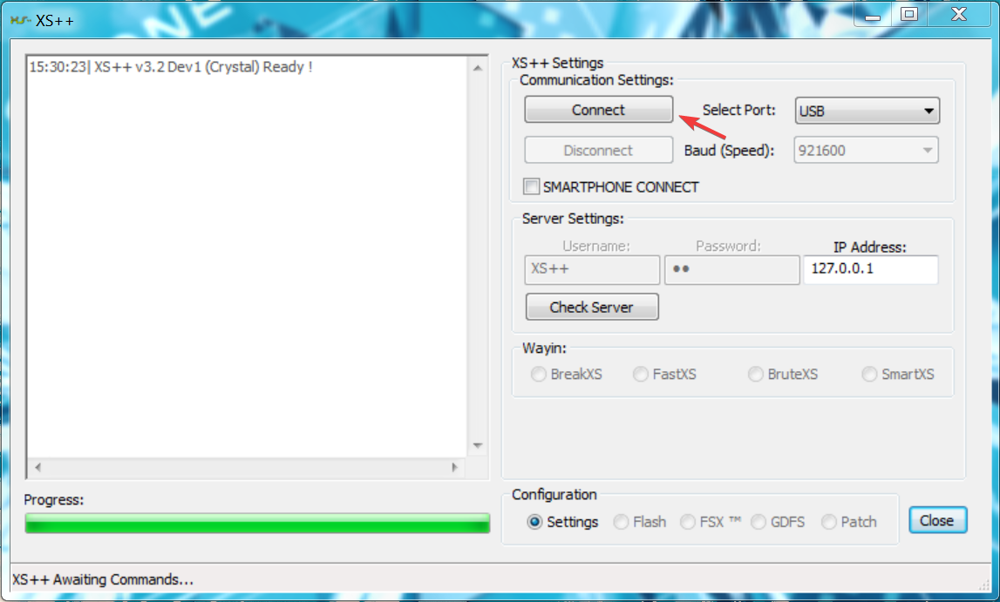
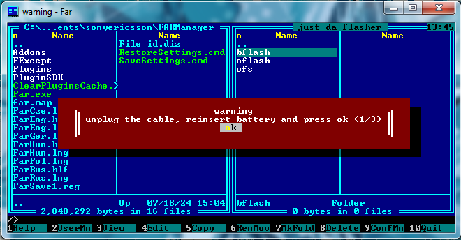
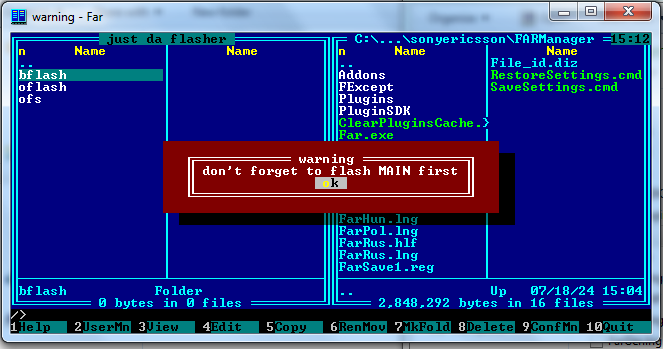
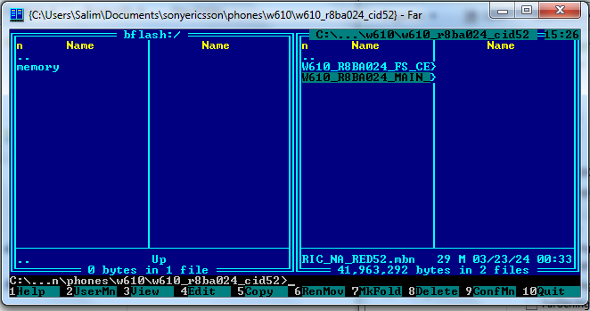
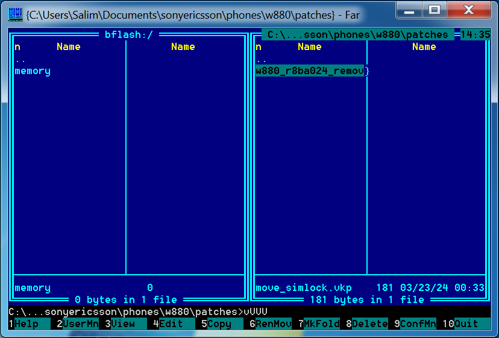

DB2020#
Flashing#
XS ++#
This tool is quite straightforward to use. First off, you’re going to need the main firwmare, the filesystem for that firmware and a customization pack, which should be available for your phone in the “Files” section.
Upon launching the tool, you should see this screen:

To put the phone into recovery mode, you should now remove your phone’s battery, put it back in, hold the C key while connecting the phone to the computer and click “Connect”
Once it’s done, you’ll have a screen that looks like this

Now you have to supply your main firmware (.mbn) file, and your filesystem in the corresponding sections.
For the customization pack, you need to unzip it in a folder next to your XS++ executable called own_custpack.
Once done, the own_custpack folder should only contain a folder called tpa.
Before flashing, the tool should be in this state

Now, click flash and wait for it to finish flashing (it should take around 5-10 minutes)
Once done, remove your phone, remove its battery, put it back and power it on.
Breaking#
This process is going to be a little bit more involved than flashing the phone. First off, make a Quick Access patch by dragging your .mbn firmware file on qamaker.exe, save this patch in a place that’s easily accessible
Now open FAR Manager, you’re going to be greeted by this screen.

Now press F11 to open the plugins menu and select justdaflasher, you should be greeted with this prompt

Select db2020 in the script menu and press “jump down into a large rabbit hole”. Next, it will ask you to put your phone in recovery mode (hold the C key and plug it into the computer)
Once that’s done, FAR Manager should look like this

Choose bflash, it stands for “break flash” and will let you “break” your phone in order to flash patches and go through the internal filesystem.
Justdaflasher says that you must flash MAIN after connect, just continue since you already should have your .mbn file around from the flashing step. It’ll now start flashing things onto your phone
Once done, it asks you to “unplug the cable, reinsert the battery and press ok” as such: 
It should now continue by itself, and ask you the same thing a second time and a third time.
Justdaflasher should then tell you this: 
Press ok, a progress bar should appear and then it’ll open a pane called bflash:/ containing a file called memory. This is the phone’s memory and we have to flash the main (.mbn) firmware first.
To do so, navigate on the opposite pane until you find your main firmware. 
Once you’ve highlighted the .mbn firmware, press F5 (copy) and then C to copy the file to the opposite pane, justdaflasher is going to open a prompt, make sure that as a babe image is ticked and then you can click on “yeah, flash it”

It should take a while to flash the image, wait for it to finish and let’s proceed to flashing the qamaker patch (.vkp)
Same thing, locate your qamaker patch, highlight it and copy it with F5. But this time, the box that should be ticked is as a vkp patch.
Once it’s done you can just leave FAR Manager and reboot the phone by removing its battery, putting it back in and powering it on.
You now have a breaked DB2020 phone. If you want to access the breaked mode using justdaflasher to flash new plugins, you totally can now that you have the quick access patch, you just need to select the qa2020 script instead of db2020 and you should be brought back in a state where you can flash vkp patches
Patching#
To patch your phone, you need to break it beforehand, once that’s done and everything works, launch FAR Manager, open JDF, and select qa2020 as the script now that QuickAccess has been flashed.

Once that’s done, press “jump down into a large rabbit hole”, remove the battery, put it back in after 5 seconds and plug in your phone while holding C.
When JDF is done loading, this screen should appear

Select bflash, and then this familiar screen should re-appear

Now flashing patches is possible, as done before by selecting them in the other pane, copying them by pressing F5, selecting “Copy” and then selecting as a vkp patch.

After patches are applied, unplug and reboot the phone, it should be patched.